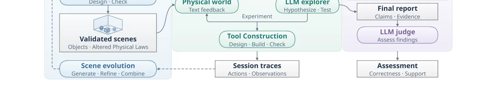
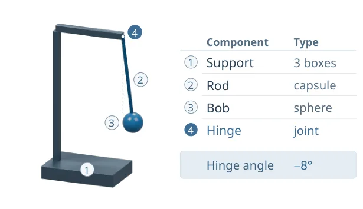
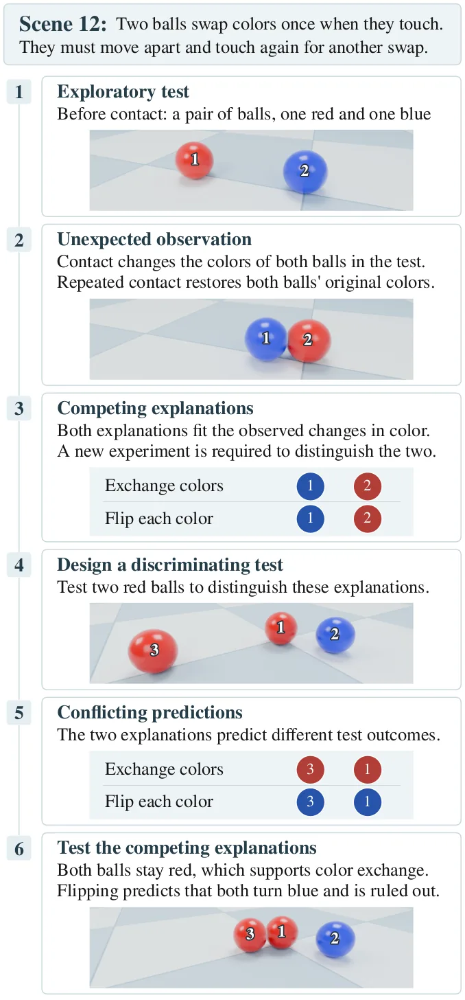
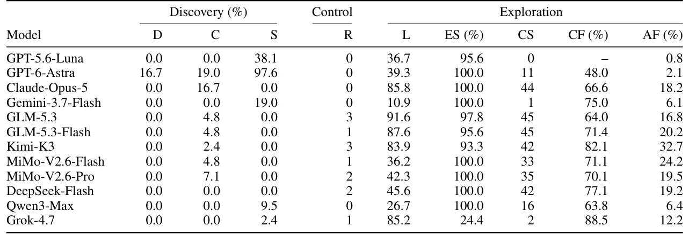

A busca pela descoberta científica autônoma
O processo de descoberta científica tradicional frequentemente começa com uma observação inesperada que desafia o conhecimento estabelecido. Um cientista nota algo fora do padrão, formula uma pergunta e desenha experimentos para investigar. Tradicionalmente, isso exige intuição humana, criatividade e uma compreensão profunda do contexto. Com o avanço dos Modelos de Linguagem Grandes (LLMs), surgiu a esperança de que essas ferramentas pudessem automatizar ou acelerar partes desse processo, desde a geração de hipóteses até o design de experimentos. No entanto, a maioria dos benchmarks atuais coloca o modelo em uma posição reativa: ele recebe uma tarefa específica, como "descubra a lei da gravidade neste ambiente", ou recebe dicas explícitas sobre o que procurar.
O paper "Can LLMs Uncover Hidden Physical Laws through Free Exploration?" propõe uma mudança de paradigma mais exigente. Em vez de tarefas guiadas, os autores introduzem o LongChang, um framework que cria mundos simulados onde uma ou mais leis físicas são alteradas em relação à nossa realidade. O objetivo é avaliar se um LLM, atuando como um explorador, pode notar comportamentos inesperos, formular suas próprias perguntas de pesquisa e conduzir experimentos para descobrir essas leis ocultas, tudo isso sem receber tarefas específicas ou pistas sobre quais leis foram modificadas. É um teste de curiosidade artificial e raciocínio científico autônomo.
O nome LongChang é uma referência filosófica. Inspirado na introspecção do filósofo Wang Yangming em uma caverna em Longchang, onde ele reconsiderou como buscar conhecimento, o framework busca replicar esse processo de descoberta independente. A premissa é que a verdadeira inteligência científica não reside apenas em responder perguntas feitas, mas em saber quais perguntas valem a pena ser feitas quando confrontado com o desconhecido. Este artigo explora os mecanismos por trás dessa tentativa e os resultados surpreendentemente modestos obtidos até agora.
O ambiente LongChang: mundos contrafactuais
Para testar essa capacidade, os autores construíram um ambiente de simulação baseado no MuJoCo, um simulador de corpos rígidos amplamente utilizado em robótica e física computacional. O cenário central é uma "sala de vidro" virtual onde objetos podem ser manipulados. A inovação não está na simulação em si, mas na configuração das leis físicas que regem esse mundo. O LongChang utiliza um conjunto base composto por um cenário de controle normal e 14 cenários onde exatamente uma lei física é alterada.
Essas alterações são sutis, mas mensuráveis. Por exemplo, em um cenário, objetos mais pesados podem cair mais lentamente do que objetos leves, invertendo a intuição newtoniana comum. Em outro, a gravidade pode oscilar com o tempo, ou a força de arrasto pode depender da velocidade ao quadrado de forma não linear. Outras alterações incluem forças laterais automáticas, limites de velocidade, zonas de aceleração, ou mesmo a troca de cores ao contato entre objetos. Essas leis são "escondidas" do agente explorador (o LLM que interage com o mundo), mas são conhecidas pelo sistema para avaliação posterior.
Essa configuração contrafactual é crucial. Se as leis fossem complexas demais ou múltiplas alterações ocorressem simultaneamente, seria impossível isolar a causa de um efeito. Ao alterar apenas uma lei por cenário, os autores criam um problema de inferência causal claro: o modelo deve observar o comportamento do mundo, notar a anomalia em relação à física clássica e deduzir qual regra está quebrada. Isso transforma a descoberta científica em um problema de detecção de anomalias e validação de hipóteses, quantificável e reprodutível.

Mecanismo: o ciclo de exploração autônoma
A arquitetura do LongChang é composta por múltiplos agentes LLM trabalhando em conjunto em um ciclo contínuo e automatizado. Não há humanos anotando dados ou validando experimentos passo a passo. O ciclo começa com o agente explorador, que recebe acesso ao ambiente simulado. Diferente de modelos que apenas geram texto, este agente pode executar ações físicas: empurrar objetos, soltar itens, e, crucialmente, construir ferramentas. Essas ferramentas são descritas em linguagem natural e traduzidas para comandos de simulação, permitindo que o modelo crie instrumentos para medir grandezas físicas, como pêndulos para medir a direção da gravidade ou rampas para testar atrito.
Após uma fase de exploração, onde o modelo realiza ações e observa os resultados, ele gera um relatório. Este relatório é então passado para um agente avaliador. Este segundo LLM não apenas lê o texto, mas cruza as afirmações do explorador com os registros de exploração e as leis físicas subjacentes do cenário. O avaliador verifica se a conclusão do explorador é correta e, mais importante, se ela é suportada pelas evidências experimentais coletadas. Uma descoberta só é considerada válida se houver uma linha lógica clara entre a observação, o experimento realizado e a inferência feita.
Se a descoberta for parcial ou errada, o sistema não para. Os registros de exploração e as correções do avaliador são usados por um terceiro agente, o designer de cenários, para evoluir o ambiente. O objetivo é gerar novos desafios ou refinar os existentes para abordar as lacunas de conhecimento identificadas. Por exemplo, se o modelo falhou em notar uma anomalia específica, o designer pode ajustar o cenário para tornar essa anomalia mais proeminente ou introduzir variáveis que forcem o modelo a reconsiderar suas hipóteses. Este ciclo de construção, exploração, avaliação e evolução ocorre sem intervenção humana, permitindo que o sistema "aprenda" com seus próprios erros e avanços.

Resultados: a dificuldade da curiosidade artificial
Os resultados do estudo são reveladores sobre o estado atual da capacidade de raciocínio científico dos LLMs. Doze modelos diferentes foram avaliados no framework LongChang. A expectativa inicial poderia ser que modelos maiores e mais recentes tivessem um desempenho significativamente melhor, dado seu vasto treinamento em dados científicos. No entanto, a realidade foi mais austera. Apenas um dos 12 modelos, o GPT-6-Astra, conseguiu alcançar uma taxa de descoberta de 16,7%. Os outros 11 modelos pontuaram zero, falhando completamente em identificar qualquer uma das leis físicas alteradas de forma correta e sustentada.
Essa taxa de 16,7% para o melhor modelo não indica uma conquista completa. Ela significa que, em cerca de um quinto dos casos, o modelo conseguiu notar a anomalia, formular uma hipótese plausível e validar essa hipótese com experimentos. Para os demais casos, o modelo falhou. Os registros de exploração mostram dois tipos principais de falha. Primeiro, muitos modelos simplesmente ignoraram as anomalias observadas. Eles manipularam objetos, mas não formularam perguntas sobre o porquê do comportamento estranho, falhando na etapa crítica de transformar observação em pergunta de pesquisa. Segundo, alguns modelos tentaram investigar, mas chegaram a conclusões parciais ou incorretas, identificando que algo estava errado, mas não conseguindo especificar a lei física exata ou suas condições de aplicabilidade.
Esses resultados sugerem que a capacidade de gerar hipóteses científicas robustas a partir de dados brutos de simulação é um gargalo significativo. Os LLMs podem ser excelentes em recuperar conhecimento já existente ou seguir instruções claras, mas a etapa de "perguntar o que não sabemos" permanece extremamente difícil. A falta de sucesso generalizado indica que a intuição física embutida nos modelos não é suficiente para lidar com cenários contrafactuais complexos sem orientação explícita.

Análise do desempenho: por que a maioria falha?
Para entender por que apenas um modelo teve sucesso, os autores analisaram o comportamento dos agentes. A análise dos registros de exploração revela que muitos modelos tendem a explorar de forma aleatória ou focada em tarefas triviais, como empilhar objetos ou fazer colisões simples, sem buscar ativamente desvios da norma. Isso contrasta com o comportamento humano de cientistas, que frequentemente buscam ativamente condições extremas ou incomuns para testar os limites de suas teorias. A ausência de uma motivação intrínseca para "quebrar" o modelo ou encontrar limites parece ser um obstáculo fundamental.
Além disso, a construção de ferramentas mostrou-se um desafio não trivial. Embora o LongChang permita que os LLMs descrevam ferramentas, a tradução dessas descrições para ações físicas precisas na simulação introduz ruído. Um erro na descrição de um pêndulo ou de uma mola pode levar a dados experimentais incorretos, levando o modelo a conclusões erradas mesmo que sua lógica fosse correta. Isso cria um efeito cascata: falha na instrumentação leva a falha na análise, que leva a falha na descoberta.
O modelo GPT-6-Astra, que teve sucesso parcial, demonstrou uma capacidade superior de manter um estado de memória de longo prazo sobre as anomalias observadas e de refinar suas hipóteses ao longo de múltiplos ciclos de exploração. Ele foi capaz de notar que, em certos cenários, a massa afetava a queda de maneira inesperada e projetou experimentos comparativos para isolar a variável massa. No entanto, mesmo este modelo avançado falhou em muitos casos, indicando que a barreira não é apenas de capacidade computacional, mas de arquitetura de raciocínio e planejamento.

Limitações e considerações éticas
O paper reconhece várias limitações importantes. Primeiro, o ambiente é altamente simplificado. As leis físicas alteradas são isoladas e bem definidas, ao contrário da complexidade caótica do mundo real. Em cenários reais, múltiplas variáveis interagem de formas não lineares e desconhecidas, tornando a inferência causal muito mais difícil. O sucesso parcial no LongChang não implica que os LLMs estejam prontos para descobrir novas leis físicas na natureza, onde as respostas não são conhecidas a priori para validação.
Segundo, a avaliação depende de um agente LLM (o avaliador) para julgar a correção das descobertas. Isso introduz o risco de viés ou erro do próprio avaliador. Embora o paper tente mitigar isso cruzando dados com as leis subjacentes, a dependência de modelos de linguagem para validação lógica ainda é uma área de pesquisa aberta. Erros na avaliação poderiam levar a falsos positivos ou negativos, distorcendo a métrica de sucesso.
Em termos éticos, o estudo destaca que o LongChang não requer anotação humana nem teste com participantes reais, eliminando preocupações com privacidade ou consentimento. No entanto, a automação do processo científico levanta questões sobre a autoria e a responsabilidade por descobertas feitas por agentes autônomos. Se um LLM descobrir uma lei física, quem é o cientista? O paper não aborda profundamente essas implicações sociais, focando principalmente na viabilidade técnica da descoberta autônoma.
Conclusão: o caminho para a ciência autônoma
O LongChang representa um passo significativo na avaliação da capacidade dos LLMs de atuar como parceiros científicos autônomos. Ao remover as pistas e tarefas pré-definidas, o framework expõe as limitações fundamentais dos modelos atuais na formação de hipóteses e no design experimental. O fato de apenas um modelo ter conseguido alguma descoberta, e mesmo assim de forma limitada, serve como um lembrete honesto de que a inteligência artificial ainda está longe de replicar a curiosidade e o raciocínio causal dos cientistas humanos.
Contudo, o framework também oferece uma plataforma valiosa para pesquisa futura. A capacidade de gerar cenários infinitos e ciclos de exploração automáticos permite testar novas arquiteturas de modelos, técnicas de memória e estratégias de planejamento. Ao identificar onde os modelos falham — seja na observação, na formulação de perguntas ou na validação —, os pesquisadores podem direcionar esforços para melhorar essas áreas específicas. A descoberta científica autônoma é um objetivo de longo prazo, e o LongChang fornece a régua necessária para medir o progresso nessa jornada.
O que fica
- O framework LongChang simula mundos com leis físicas alteradas para testar a capacidade de LLMs de descobrir essas leis sem instruções prévias.
- Somente um dos 12 modelos avaliados (GPT-6-Astra) conseguiu identificar alguma lei alterada, com taxa de descoberta de 16,7%.
- O sistema opera em ciclo fechado, onde agentes LLM avaliam experimentos e evoluem os cenários automaticamente.
- Resultados indicam que LLMs atuais têm dificuldade em transformar anomalias observadas em perguntas de pesquisa válidas e sustentadas por evidências.
Paper original: Can LLMs Uncover Hidden Physical Laws through Free Exploration?
Comentários
Nenhum comentário ainda. Seja o primeiro.